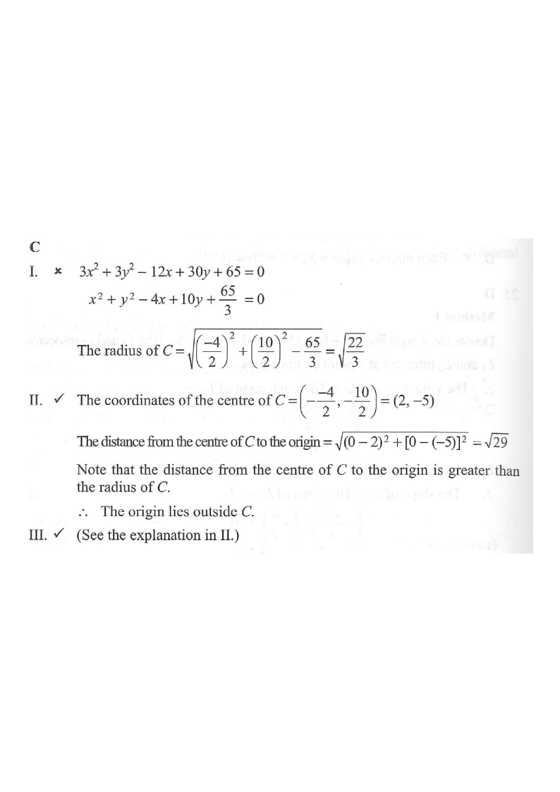

The equation of the circle C is
$3x^2+3y^2-12x+30y+65=0$
Which of the following are true?
I. The radius of C is 14.
II. The origin lies outside C.
III. The coordinates of the centre of C are (2, −5).

Divide the whole equation by $3$ so that the coefficients of $x^2$ and $y^2$ are both $1$:
$$x^2+y^2-4x+10y+\frac{65}{3}=0$$
A circle's equation must be in the form $x^2+y^2+Dx+Ey+F=0$ before we can read off the centre and radius.
Compare with the general form $x^2+y^2+Dx+Ey+F=0$:
$$D=-4,\qquad E=10,\qquad F=\frac{65}{3}$$
Centre $=\left(-\dfrac{D}{2},-\dfrac{E}{2}\right)=\left(\dfrac{4}{2},-\dfrac{10}{2}\right)=(2,-5)$
So statement III is TRUE.
$$r=\sqrt{\left(\frac{D}{2}\right)^2+\left(\frac{E}{2}\right)^2-F}$$
$$r=\sqrt{(2)^2+(-5)^2-\frac{65}{3}}=\sqrt{4+25-\frac{65}{3}}=\sqrt{29-\frac{65}{3}}$$
$$r=\sqrt{\frac{87-65}{3}}=\sqrt{\frac{22}{3}}\approx 2.71\ \ (\neq 14)$$
So statement I is FALSE.
$$OC=\sqrt{(2-0)^2+(-5-0)^2}=\sqrt{4+25}=\sqrt{29}\approx 5.39$$
Compare this with the radius $r=\sqrt{22/3}\approx 2.71$.
Since
$$\sqrt{29}>\sqrt{\frac{22}{3}}\ \Longleftrightarrow\ 29>\frac{22}{3}$$
the origin is further from the centre than the radius, so the origin lies outside the circle.
So statement II is TRUE.
True statements: II and III.
Therefore the answer is C.
Question. The equation of a circle is \(2x^{2}+2y^{2}+12x-8y+20=0\). Which of the following are true? I. The radius of the circle is \(\sqrt{3}\). II. The origin lies outside the circle. III. The centre of the circle is \((-3,2)\). A. I and II only B. I and III only C. II and III only D. I, II and III [1 mark]